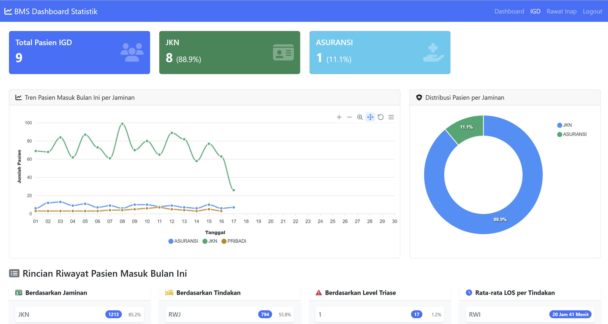
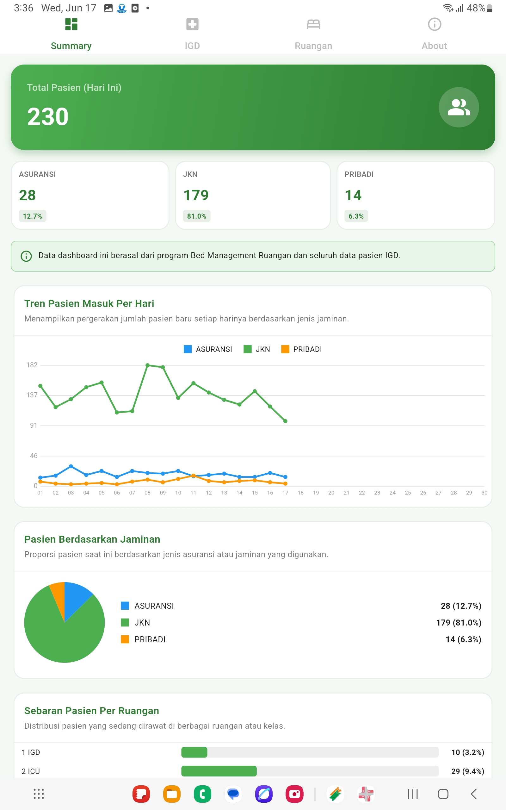
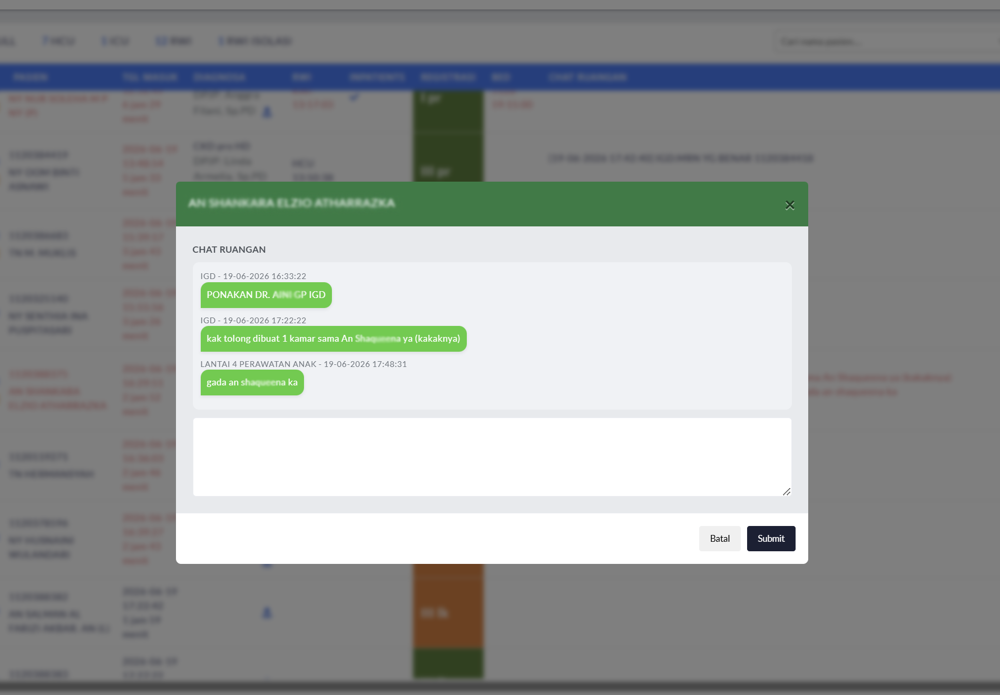

Patchuri
Rumah Sakit Hermina Grand Wisata
📧 patchuriace@gmail.com
Real-Time
Monitoring BedIGD
Pasien Menunggu Rawat Inap24/7
Ketersediaan InformasiWeb
Dashboard TerintegrasiReview Visual Dashboard
UI Preview
Tampilan utama dashboard berbasis web untuk monitoring bed dan pasien secara real-time.

Konsep tampilan mobile untuk memantau informasi cepat dan notifikasi penting di perangkat Android.

Visualisasi notifikasi sistem Android untuk pasien baru yang masuk ke sistem.
Interface chat koordinasi antar unit untuk mendukung komunikasi cepat dan responsif.
Area preview untuk video demo versi web yang akan ditambahkan nanti.
Area preview untuk video demo versi Android yang akan ditambahkan nanti.
Preview Platform
Web & AndroidAntarmuka web untuk monitoring real-time, analitik layanan, dan pengambilan keputusan operasional.

Versi Android memungkinkan staf cepat melihat status pasien, bed, dan notifikasi secara praktis.
ABSTRAK
Boarding time pasien di Instalasi Gawat Darurat (IGD) masih menjadi tantangan dalam pelayanan rumah sakit akibat keterbatasan informasi ketersediaan tempat tidur dan koordinasi antar unit yang belum terintegrasi. Penelitian ini bertujuan mengembangkan SMART Bed Dashboard sebagai sistem pendukung keputusan berbasis real-time untuk mempercepat penempatan pasien dari IGD ke ruang rawat inap. Metode yang digunakan adalah Prototype melalui tahapan analisis kebutuhan, perancangan, pengembangan, pengujian, dan implementasi sistem. SMART Bed Dashboard mengintegrasikan monitoring tempat tidur, monitoring pasien, komunikasi antar unit, notifikasi otomatis, dashboard analitik, dan Smart Alert System dalam satu platform. Hasil implementasi menunjukkan sistem mampu meningkatkan visibilitas ketersediaan tempat tidur, mempercepat koordinasi pelayanan, mendukung pengambilan keputusan, serta membantu pengendalian boarding time secara real-time.
Kata Kunci: Bed Management, Boarding Time, Dashboard Real-Time, Decision Support System.
LATAR BELAKANG
- Boarding time yang tinggi dapat menyebabkan penumpukan pasien di IGD dan menurunkan efisiensi pelayanan.
- Informasi ketersediaan tempat tidur masih sering diperoleh secara manual sehingga memperlambat proses penempatan pasien.
- Koordinasi antara Admisi, IGD, dan Ruang Rawat Inap belum terintegrasi dalam satu platform.
- Rumah sakit membutuhkan sistem yang mampu menyajikan informasi real-time sekaligus mendukung pengambilan keputusan operasional.
TUJUAN PENELITIAN
Mengembangkan SMART Bed Dashboard sebagai sistem pendukung keputusan berbasis real-time untuk:
- Mempercepat penempatan pasien dari IGD ke ruang rawat inap.
- Meningkatkan koordinasi antar unit pelayanan.
- Mendukung monitoring indikator pelayanan secara terintegrasi.
- Membantu pengurangan boarding time.
METODOLOGI
Metode pengembangan menggunakan Prototype dengan tahapan:
- Analisis kebutuhan pengguna.
- Perancangan sistem.
- Pengembangan aplikasi berbasis web.
- Evaluasi dan perbaikan sistem.
- Pengujian Black Box.
- Implementasi.
HASIL
SMART Bed Dashboard berhasil dikembangkan dan diimplementasikan sebagai platform terintegrasi yang digunakan oleh Admisi, IGD, dan Ruang Rawat Inap.
Fitur utama yang tersedia:
- Monitoring bed real-time.
- Monitoring pasien (diagnosa, kelas perawatan, triase, LOS, boarding time).
- Notifikasi otomatis penempatan pasien.
- Chat koordinasi antar unit.
- Dashboard analitik pelayanan.
- Smart Alert System.
- Notifikasi Kode Biru (experimental).
Sistem mampu menyediakan informasi operasional dan klinis dalam satu dashboard sehingga mempercepat koordinasi dan proses penempatan pasien.
ANALISIS
SMART Bed Dashboard mengubah proses bed management yang sebelumnya bersifat manual menjadi terintegrasi dan real-time. Integrasi data pasien, ketersediaan tempat tidur, komunikasi antar unit, dan sistem notifikasi membantu mempercepat proses transfer pasien dari IGD ke ruang rawat inap.
Nilai inovasi sistem terletak pada penerapan Smart Alert System yang memberikan indikator merah secara otomatis apabila parameter pelayanan melampaui batas yang ditentukan, seperti boarding time, LOS, occupancy rate, dan rasio biaya obat terhadap koding diagnosis. Fitur ini memungkinkan identifikasi dini terhadap potensi hambatan pelayanan dan mendukung pengambilan keputusan yang lebih cepat.
KESIMPULAN DAN SARAN
Kesimpulan
SMART Bed Dashboard merupakan inovasi digital yang mengintegrasikan bed management, monitoring pasien, komunikasi antar unit, dashboard analitik, dan Smart Alert System dalam satu platform real-time. Sistem mendukung percepatan penempatan pasien, peningkatan koordinasi pelayanan, serta pengurangan boarding time di IGD.
Saran
- Mengembangkan fitur prediksi ketersediaan tempat tidur berbasis data historis.
- Mengintegrasikan sistem dengan EMR dan HIS rumah sakit.
- Melakukan evaluasi kuantitatif terhadap dampak implementasi terhadap boarding time dan efisiensi pelayanan.
REFERENSI
- Hall R. Patient Flow: Reducing Delay in Healthcare Delivery. Springer.
- Wager KA, Lee FW, Glaser JP. Health Care Information Systems. Jossey-Bass.
- Pressman RS, Maxim BR. Software Engineering: A Practitioner's Approach.
- Sommerville I. Software Engineering.
- Kementerian Kesehatan Republik Indonesia. Standar Pelayanan Rumah Sakit.